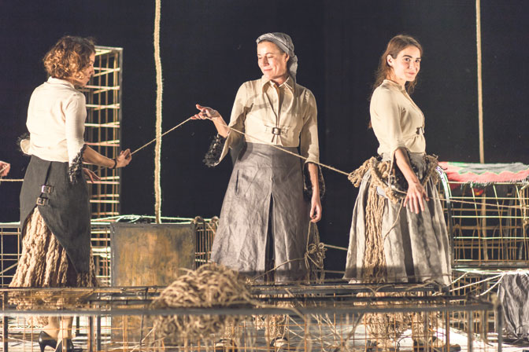

Počinje Sterijino pozorje
Objavljeno 1.01.2019. u 16:20

Festival će biti otvoren besedom Svetlane Bojković, a čast da nastupi prve večeri pripala je predstavi „Petrijin venac”.
Ovogodišnje, 64. po redu Sterijino pozorje u Novom Sadu biće otvoreno večeras od 20 sati po tradiciji na sceni Srpskog narodnog pozorišta besedom glumice Svetlane Bojković. Čast da nastupi prve festivalske večeri pripala je predstavi „Petrijin venac” prema romanu Dragoslava Mihailovića, dramatizacija Mila Mašović-Nikolić, režija Boban Skerlić i u izvođenju Ateljea 212 iz Beograda. Selektor Svetislav Jovanov odabrao je selekciju koju čini osam predstava, a koju prati podnaslov „Pobuna – ženski rod” , odnosno tri ostvarenja u okviru međunarodnog programa „Krugovi” koje će pozorijanska publika imati priliku da pogleda do 3. juna.
Na pitanje ko su njegovi pozorišni favoriti, koje pozorište ga posebno uzbuđuje, odnosno koja predstava je najskuplja koju ćemo gledati na Pozorju, Svetislav Jovanov kaže za „Politiku” :
–Pristalica sam upravo pozorišta zasnovanog na emociji i sukobu, ali osvešćenog u odnosu na svoje vreme. Pozorište je „prljava” umetnost – u pozitivnom smislu reči – ono mora da angažuje emociju i razum, ali i sva čula. Ne podnosim teatar koji svoju monotoniju pravda intelektualnim konceptom: za pozorište je, kao i za ljubav, potrebno dvoje (dobro, može i troje), dakle, izvođač i posmatrač. Stoga su moji favoriti, među savremenim evropskim dramatičarima, ponajpre Tomas Bernhard, Geza Beremenji, Dea Loer i nama malo poznata, ali već kultna finska dramatičarka Sofi Oksanen. Pošto nije oportuno da se izjašnjavam o autorima i rediteljima, želeo bih da, što se tiče protekle sezone, izdvojim najperspektivnija glumačka imena: Marta Bjelica („Petrijin venac”), Milica Sužnjević („Zla žena”) i pre svih, Iva Ilinčić („Osama”).